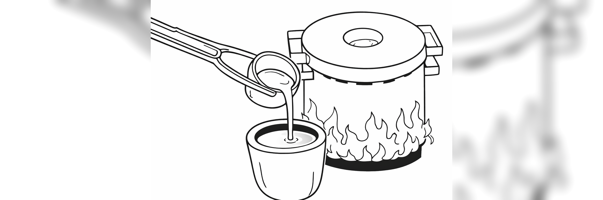

Project
Manufacture a metal part via the casting process from a CAD design.
A part was designed in CAD and preliminary prototypes were developed by 3D printing. Plaster molds were made for the casting process. Aluminum was then melted at high temperature and poured into the mold to obtain the final piece, which underwent finishing processes to remove imperfections.
Part CAD design, development of prototypes through 3D printing, mold preparation, and execution of the casting process.
An aluminum part based on the generated design was obtained.